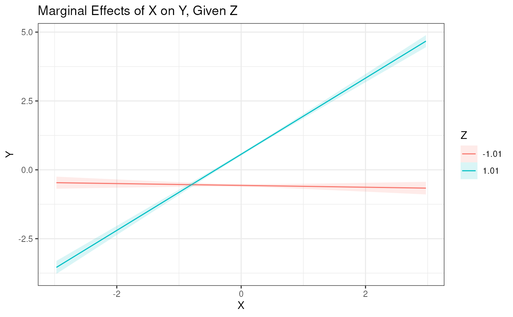

simple slopes analysis
simple_slopes.RmdSimple Slopes Analysis
Simple slope effects can be plotted using the included
plot_interaction() function. This function takes a fitted
model object and the names of the two variables that are interacting.
The function will plot the interaction effect of the two variables,
where:
- The x-variable is plotted on the x-axis.
- The y-variable is plotted on the y-axis.
- The z-variable determines at which points the effect of x on y is plotted.
The function will also plot the 95% confidence interval for the
interaction effect. Note that the vals_z argument (as well
as the values of x) are scaled by the mean and standard
deviation of the variables. Unless the rescale argument is
set to FALSE.
Here is a simple example using the double-centering approach:
m1 <- "
# Outer Model
X =~ x1
X =~ x2 + x3
Z =~ z1 + z2 + z3
Y =~ y1 + y2 + y3
# Inner Model
Y ~ X + Z + X:Z
"
est1 <- modsem(m1, data = oneInt)
plot_interaction(x = "X", z = "Z", y = "Y", vals_z = c(0, 1), model = est1)
If you want to see the numerical values of the simple slopes, you can
use the simple_slopes() function:
m1 <- "
# Outer Model
X =~ x1
X =~ x2 + x3
Z =~ z1 + z2 + z3
Y =~ y1 + y2 + y3
# Inner Model
Y ~ X + Z + X:Z
"
est1 <- modsem(m1, data = oneInt)
simple_slopes(x = "X", z = "Z", y = "Y", vals_z = c(0, 1), model = est1)
#>
#> Predicted Y, given Z = 0:
#> --------------------------------------------------------------------
#> X | Predicted Y | Std.Error | z.value | p.value | Conf.Interval
#> --------------------------------------------------------------------
#> -2.97 | -2.00 | 0.079 | -25 | 0.000 | [-2.16, -1.85]
#> -1.98 | -1.34 | 0.053 | -25 | 0.000 | [-1.44, -1.23]
#> -0.99 | -0.67 | 0.026 | -25 | 0.000 | [-0.72, -0.62]
#> 0.00 | 0.00 | 0.000 | NaN | NaN | [ 0.00, 0.00]
#> 0.99 | 0.67 | 0.026 | 25 | 0.000 | [ 0.62, 0.72]
#> 1.98 | 1.34 | 0.053 | 25 | 0.000 | [ 1.23, 1.44]
#> 2.97 | 2.00 | 0.079 | 25 | 0.000 | [ 1.85, 2.16]
#>
#>
#> Predicted Y, given Z = 1.01:
#> --------------------------------------------------------------------
#> X | Predicted Y | Std.Error | z.value | p.value | Conf.Interval
#> --------------------------------------------------------------------
#> -2.97 | -3.54 | 0.120 | -29 | 0.000 | [-3.78, -3.31]
#> -1.98 | -2.17 | 0.084 | -26 | 0.000 | [-2.34, -2.01]
#> -0.99 | -0.80 | 0.049 | -16 | 0.000 | [-0.90, -0.71]
#> 0.00 | 0.57 | 0.026 | 22 | 0.000 | [ 0.51, 0.62]
#> 0.99 | 1.93 | 0.042 | 46 | 0.000 | [ 1.85, 2.02]
#> 1.98 | 3.30 | 0.076 | 44 | 0.000 | [ 3.16, 3.45]
#> 2.97 | 4.67 | 0.112 | 42 | 0.000 | [ 4.45, 4.89]The simple_slopes() function returns a simple_slopes
object, which is a data.frame with some additional
attributes. It only has a single method (or technically, a generic
function), print.simple_slopes(), which prints the simple
slopes in a easy-to-read format. If you want to extract the simple
slopes as a data.frame, you can use the
as.data.frame() function:
m1 <- "
# Outer Model
X =~ x1
X =~ x2 + x3
Z =~ z1 + z2 + z3
Y =~ y1 + y2 + y3
# Inner Model
Y ~ X + Z + X:Z
"
est1 <- modsem(m1, data = oneInt)
slopes <- simple_slopes(x = "X", z = "Z", y = "Y",
vals_z = c(0, 1), model = est1)
as.data.frame(slopes)
#> vals_x vals_z predicted std.error z.value p.value ci.upper
#> 1 -2.9713704 0.000000 -2.0043501 0.07897710 -25.37887 4.315370e-142 -1.8495578
#> 2 -1.9809136 0.000000 -1.3362334 0.05265140 -25.37887 4.315370e-142 -1.2330385
#> 3 -0.9904568 0.000000 -0.6681167 0.02632570 -25.37887 4.315370e-142 -0.6165193
#> 4 0.0000000 0.000000 0.0000000 0.00000000 NaN NaN 0.0000000
#> 5 0.9904568 0.000000 0.6681167 0.02632570 25.37887 4.315370e-142 0.7197141
#> 6 1.9809136 0.000000 1.3362334 0.05265140 25.37887 4.315370e-142 1.4394282
#> 7 2.9713704 0.000000 2.0043501 0.07897710 25.37887 4.315370e-142 2.1591423
#> 8 -2.9713704 1.008084 -3.5419750 0.12016032 -29.47708 5.664083e-191 -3.3064651
#> 9 -1.9809136 1.008084 -2.1729185 0.08376085 -25.94194 2.242150e-148 -2.0087503
#> 10 -0.9904568 1.008084 -0.8038620 0.04930659 -16.30334 9.344238e-60 -0.7072229
#> 11 0.0000000 1.008084 0.5651944 0.02615878 21.60630 1.567068e-103 0.6164647
#> 12 0.9904568 1.008084 1.9342509 0.04213438 45.90671 0.000000e+00 2.0168328
#> 13 1.9809136 1.008084 3.3033074 0.07552624 43.73721 0.000000e+00 3.4513362
#> 14 2.9713704 1.008084 4.6723639 0.11167365 41.83945 0.000000e+00 4.8912403
#> ci.lower
#> 1 -2.1591423
#> 2 -1.4394282
#> 3 -0.7197141
#> 4 0.0000000
#> 5 0.6165193
#> 6 1.2330385
#> 7 1.8495578
#> 8 -3.7774849
#> 9 -2.3370868
#> 10 -0.9005012
#> 11 0.5139242
#> 12 1.8516691
#> 13 3.1552787
#> 14 4.4534876